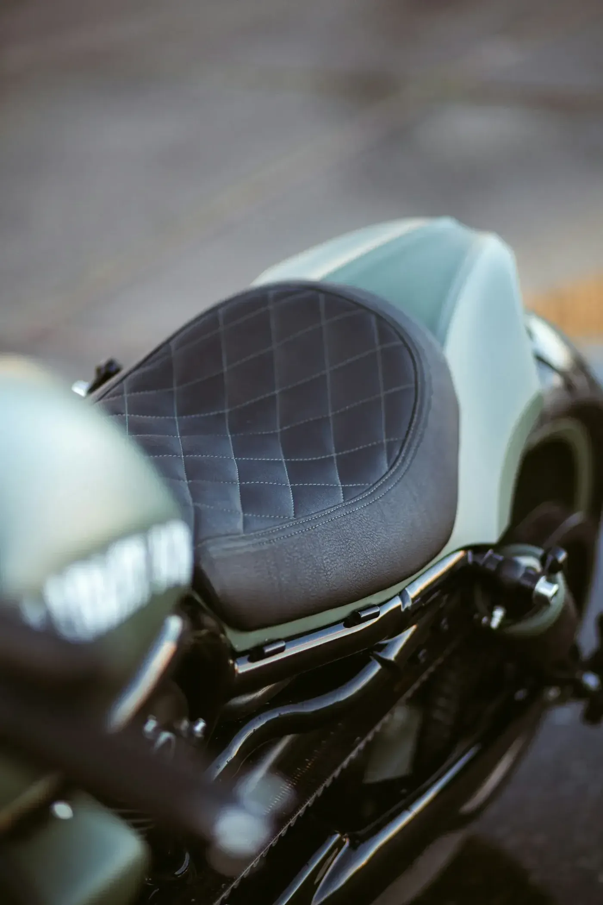
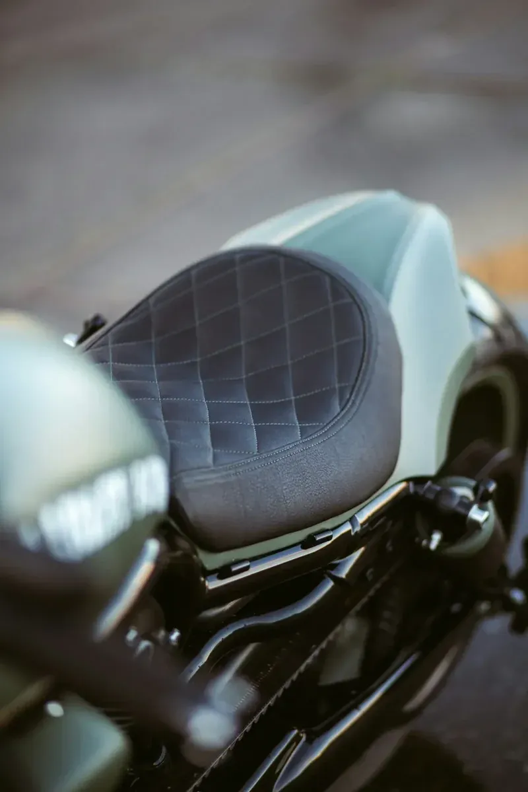
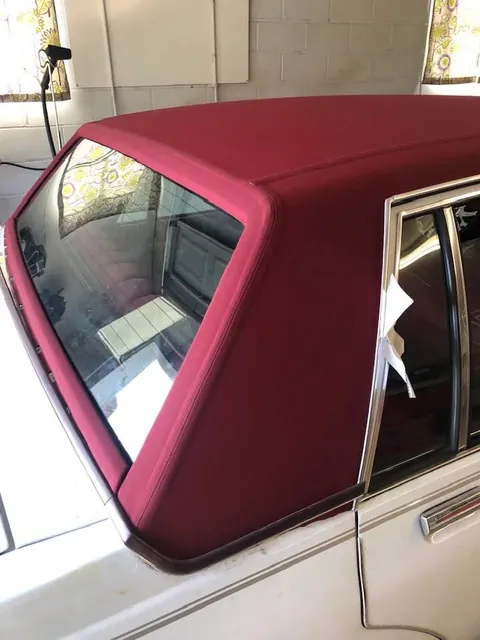

Motorcycle upholstery
Custom motorcycle seats
Recovered, reshaped, or built to your own pattern — for daily riders and show bikes alike.

Seat work
- Recovering worn or split seats
- Foam reshaping for comfort and height
- Pan repair where needed
Custom detail
- Diamond and pleated stitch patterns
- Contrast thread and piping
- Two-tone and custom material combinations
Turnaround
- Bring the seat in on its own — no need for the bike
- Free estimate, no obligation
02Recent work
Jobs out of this shop


03Frequently asked questions
Answers before you call
Do I need to bring the whole bike?
No — take the seat off and bring it in. That is how most of these jobs start.
Can you make the seat taller or lower?
Often yes. Reshaping the foam can change the height and the riding position. Tell us what is uncomfortable and we will talk through the options.
Can you do a custom stitch pattern?
Yes. Diamond, pleated, contrast thread, two-tone — bring a picture of what you want and we will tell you what is achievable on your pan.
05Ready when you are
Ready to transform your interior?
Bring new life to your seats, tops, and trim with work built for comfort, durability, and long-term pride of ownership.
Free estimates · In-person quotes · Monroe, NC since 1989